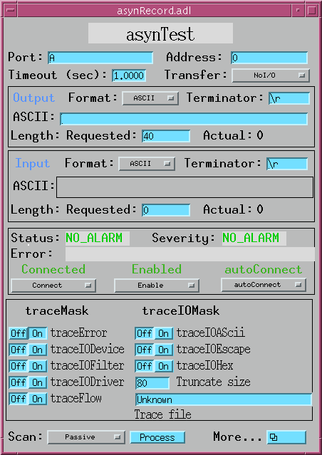
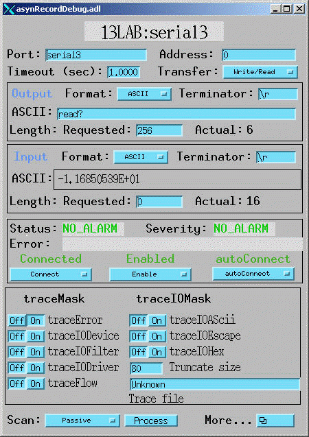
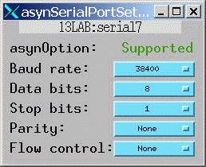
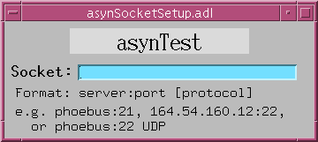

The asyn record is designed to perform generic I/O to any asyn device that supports the asynOctet interface. It is intended to allow EPICS to communicate with a new device without rebooting the IOC, i.e. without writing any C code or changing the database. The asyn record is thus very useful for allowing Channel Access clients to communicate with devices for which no EPICS device support exists. In combination with the scalcout record to format output strings and to parse response strings, it can actually eliminate the need for C device support code in many applications. It is also useful for diagnostics. The asyn device "port" and "address" can be dynamically changed in the record, so a single asyn record can be switched from talking to one device to another at run time. It provides access to asynTrace for the device, controlling debugging output.
There are two output fields, AOUT (ASCII Output) and BOUT (Byte Output). The
OFMT (Output Format) field is used to select one of these fields or the other as
the output source to the device. Similarly, there are two input fields, AINP (ASCII Input) and BINP (Byte Input). The IFMT
(Input Format) field is used to select one or the other as the destination of
data sent from the
device. The ASCII fields are type DBF_STRING, and are very convenient for
typical communication with many devices. They permit, for example, medm
screens where the user can type a string and observe the response from the
instrument. The ASCII fields, however are limited to 40 characters in length,
and cannot be used to read or write binary data. The byte input and output
fields are DBF_CHAR arrays, and can be used to transfer large blocks of
arbitrary data, either ASCII or binary.
For local serial ports the baud rate, parity, etc. can be controlled by fields in the record. For GPIB devices the GPIB address can be changed, and global and addressed commands can be executed. asyn socket ports can be dynamically created at run time.
In the "Access" columns in the field description tables:
| R | Read only | |
| R/W | Read and write are allowed | |
| R/W* | Read and write are allowed; write triggers record processing if the record's SCAN field is set to "Passive". | |
| N | No access allowed |
| Name | Access | Prompt | Data type | Description |
|---|---|---|---|---|
| PORT | R/W | "asyn port" | DBF_STRING | The asyn "port" name. This field can be changed at any time to connect the record to another asyn device. |
| ADDR | R/W | "asyn address" | DBF_LONG | The asyn address. This field can be changed at any time to connect the record to another asyn device. The asyn address parameter is currently only used for GPIB devices, but in the future it may be used for RS-485 and other applications. |
| SOCK | R/W | "Socket address" | DBF_STRING | The name of a server:port for a TCP/IP socket connection. This field can be changed at any time to connect to a new TCP/IP socket. It creates a new port with the same name as the socket string, and connects the record to that port. Syntax is server:port, e.g. corvette:21 or 164.54.160.50:21 |
The asyn record does not have traditional INP or OUT fields for input and output links. Rather it provides the PORT and ADDR fields to allow dynamically changing what asyn device the record is connected to.
Writing to the PORT or ADDR fields causes the asyn record to disconnect from the current device and connect to the specified asyn port and address. This permits a single asyn record to be used to control any asyn device. Writing to these fields does not cause the record to process, i.e. no I/O is done.
Writing to the SOCK field causes the record to create a new asyn port with the same name as the SOCK field. This is done with drvGenericSerialConfigure.
| Name | Access | Prompt | Data type | Description | ||||
|---|---|---|---|---|---|---|---|---|
| VAL | R/W | "Value field (unused)" | DBF_STRING | This field is unused. The functions normally assigned to the VAL field in many records are performed by the AOUT, BOUT, AINP, and BINP fields in the asyn record. | ||||
| TMOD | R/W | "Transaction mode" | DBF_RECCHOICE | The type of I/O transaction to perform when the record is processed. The choices are:
| ||||
| TMOT | R/W | "Timeout (sec)" | DBF_DOUBLE | The timeout value for read and write operations in seconds. If a response is not received from the device within this time then the record sets a major alarm. -1.0 means wait forever, no timeour. Default=1.0 |
The TMOD field controls what type of I/O is performed when the record processes.
| "Write/Read" (default) | The output source (AOUT or BOUT as selected by OFMT) is sent to the device. A response is then read back into AINP or BINP (as selected by IFMT). The response must be received within the time specified by TMOT. The input buffer is flushed before the write operation, so that any characters received prior to the write operation are discarded. The Write/Read operation is "atomic", meaning that it is guaranteed that no other asyn I/O to the device will occur between the write and read operations. |
| "Write" | The output source (AOUT or BOUT as selected by OFMT) is sent to the device. No response is read back. |
| "Read" | Data is read from the device into the input field (AINP or BINP as selected by IFMT). The response must be received within the time specified by TMOT. No output is sent to the device prior to the read operation. |
| "Flush" | The input buffer is flushed. Nothing is sent to the device or read from the device. |
| Name | Access | Prompt | Data type | Description | ||||||
|---|---|---|---|---|---|---|---|---|---|---|
| AOUT | R/W* | "Output string" | DBF_STRING | The output string which is sent to the device if OFMT="ASCII". The
number of bytes sent to the device will be strlen(AOUT) plus strlen(OEOS). | ||||||
| BOUT | R/W* | "Output byte data" | DBF_CHAR (array) | The output data which is sent to the device if OFMT="Binary"
or "Hybrid". The
maximum length of this field is controlled by OMAX. The actual number of
bytes to be sent to the device when OFMT="Hybrid" will be strlen(AOUT)
plus strlen(OEOS). The actual number of
bytes to be sent to the device when OFMP="Binary" will be NOWT. | ||||||
| OEOS | R/W | "Output terminator" | DBF_STRING | A character string that is appended to the output before transmission to the device. This field is ignored if OFMT="Binary". Set this field to "" to suppress transmission of a terminator. Commonly used values are "\r" (the default), "\n", and "\r\n". | ||||||
| OMAX | R | "Max. size of output array" | DBF_LONG | The allocated length of the BOUT array. This value cannot be changed after IOC initialization. Default=512. | ||||||
| NOWT | R/W | "Number of bytes to write" | DBF_LONG | The number of bytes to send from the BOUT array to the device if OFMT="Binary". This value must be less than or equal to OMAX. Default=512. | ||||||
| NAWT | R/W | "Number of bytes actually written" | DBF_LONG | The actual number of bytes written in the last write operation. This field is valid for all OFMT modes. This number includes the output terminator, if any. | ||||||
| OFMT | R/W | "Output format" | DBF_RECCHOICE | The output format. The choices are:
|
There are two output fields, AOUT (ASCII Output) and BOUT (Byte Output). The OFMT (Output Format) field is used to select one of these fields or the other as the output source to the device.
If OFMT="ASCII" then the AOUT fields and OEOS fields are processed with dbTranslateEscape() to convert control characters (e.g. "\r", "\021") to bytes, these fields are combined into a single buffer, the length of the output is determined with strlen(), and the string is sent to the device.
If OFMT="Hybrid" then the BOUT fields and OEOS fields are processed with dbTranslateEscape() to convert control characters (e.g. "\r", "\021") to bytes, these fields are combined into a single buffer, the length of the output is determined with strlen(), and the string is sent to the device.
If OFMT="Binary" then the NOWT bytes from the BOUT field are sent to the device. The OEOS field is ignored, and dbTranslateEscape() is not called.
| Name | Access | Prompt | Data type | Description | ||||||
|---|---|---|---|---|---|---|---|---|---|---|
| AINP | R | "Input string" | DBF_STRING | The input string which is read from the device if IFMT="ASCII". The string will be null terminated. Note that due to the maximum size of a string in EPICS, the input string must be less than 40 characters. If longer strings are required then set IFMT="Hybrid" and read into the BINP field. | ||||||
| BINP | R | "Input byte data" | DBF_CHAR (array) | The input data which is read from the device if IFMT="Hybrid" or IFMT="Binary". The maximum length of this field is controlled by IMAX. The actual number of bytes read from the device is given by NORD. | ||||||
| IEOS | R/W | "Input terminator" | DBF_STRING | A string that indicates the end of a message on input. Set this field to """ if no input terminator should be used. This field is ignored if IFMT="Binary". Commonly used values are "\r" (the default), "\n", and "\r\n". The input terminator is removed from the input buffer after the read. | ||||||
| IMAX | R | "Max. size of input array" | DBF_LONG | The allocated length of the BINP array. This value cannot be changed after IOC initialization. Default=512. | ||||||
| NRRD | R/W | "Number of bytes to read" | DBF_LONG | The requested number of bytes to read. This field is valid for all IFMT modes. If this field is <= 0, then the requested number of bytes to read will be the EPICS defined MAX_STRING_SIZE=40 (if IFMT="ASCII") or IMAX (if IFMT="Hybrid" or "Binary"). Default=0. | ||||||
| NORD | R | "Number of bytes read" | DBF_LONG | The actual number of bytes read in the last read operation. This field is valid for all IFMT modes. This number includes the input terminator, if any. | ||||||
| IFMT | R/W | "Input format" | DBF_RECCHOICE | The input format. The choices are:
|
There are two input fields, AINP (ASCII Input) and BINP (Byte Input). The IFMT (Input Format) field is used to select one or the other as the destination of data sent from the device.
A read operation terminates when 1 of the following 4 conditions is met:
If IFMT="ASCII" then the IEOS field is processed with dbTranslateEscape() to convert control characters (e.g. "\r", "\021") to bytes, and the asyn input terminator is set to this string. The input is read into the AINP field. The input terminator string, if present, is removed from AINP after the read, and AINP will be null terminated.
If IFMT="Hybrid" then the IEOS field is processed with dbTranslateEscape() to convert control characters (e.g. "\r", "\021") to bytes, and the asyn input terminator is set to this string. The input is read into the BINP field. The input terminator string, if present, is removed from BINP after the read, and BINP will be null terminated.
If IFMT="Binary" then the IEOS field is ignored, and no asyn input terminator is used. The input is read into the BINP field. BINP will be null terminated.
The IEOS terminator field is 40 characters long. However, the serial
drivers permit 2 character end-of-message strings at most. The GPIB drivers only
permit 1 character end-of-message strings.
| BAUD | R/W | "Baud rate" | DBF_RECCHOICE | The baud rate for the port. Choices are "300", "600", "1200", "2400", "4800", "9600", "19200", and "38400", "57600", "115200", and "230400". Default="9600". |
| PRTY | R/W | "Parity" | DBF_RECCHOICE | The device parity. Choices are "None", "Even", and "Odd". Default="None". |
| DBIT | R/W | "Data bits" | DBF_RECCHOICE | The number of data bits. Choices are "5", "6", "7", and "8". Default="8". |
| SBIT | R/W | "Stop bits" | DBF_RECCHOICE | The number of stop bits. Choices are "1" and "2". Default="1". |
| FCTL | R/W | "Flow control" | DBF_RECCHOICE | The flow control. Choices are "None" and "Hardware". Default="None". |
The above fields are used to set the serial port parameters. A write to any of these fields causes the port parameters to be changed immediately, but does not cause the record to process. The port parameters can currently be set only for local serial ports, including IP-Octal on vxWorks. They cannot currently be set for Ethernet/serial adapters like the Moxa units.
The baud rates actually available are device dependent. For the SBS IP-Octal module the maximum baud rate is 38400.
| Name | Access | Prompt | Data type | Description | |||||||
|---|---|---|---|---|---|---|---|---|---|---|---|
| ADDR | R/W | "GPIB address" | DBF_LONG | The GPIB address of the device. This field can be changed at any time. | |||||||
| SPR | R | "Serial Poll Response" | DBF_UCHAR | The device status byte, which is read during a Serial Poll operation. | |||||||
| UCMD | R/W* | "Universal command" | DBF_RECCHOICE | A GPIB Universal Command to be executed. GPIB Universal Commands are
commands which are directed to all devices on the GPIB bus, not just
addressed devices. The choices are:
If the UCMD field is set to any value except "None" then the appropriate Universal Command is executed, and UCMD is set back to "None". The record processing only performs the Universal Command, i.e. it does not also perform the GPIB operation indicated by TMOD. |
|||||||
| ACMD | R/W* | "Addressed command" | DBF_RECCHOICE | A GPIB Addressed Command to be executed. GPIB Addressed Commands are
commands which are directed to only the addressed devices on the GPIB bus.
The choices are:
If the ACMD field is set to any value except "None" then the appropriate Addressed Command is executed, and ACMD is set back to "None". The record processing only performs the Addressed Command, i.e. it does not also perform the GPIB operation indicated by TMOD. |
| Name | Access | Prompt | Data type | Description |
|---|---|---|---|---|
| TB0 | R/W | "Trace error" | DBF_RECCHOICE | The ASYN_TRACE_ERROR bit. Choices are "Off" and "On". |
| TB1 | R/W | "Trace IO device" | DBF_RECCHOICE | The ASYN_TRACEIO_DEVICE bit. Choices are "Off" and "On". |
| TB2 | R/W | "Trace IO filter" | DBF_RECCHOICE | The ASYN_TRACEIO_FILTER bit. Choices are "Off" and "On". |
| TB3 | R/W | "Trace IO driver" | DBF_RECCHOICE | The ASYN_TRACEIO_DRIVER bit. Choices are "Off" and "On". |
| TB4 | R/W | "Trace flow" | DBF_RECCHOICE | The ASYN_TRACEIO_FLOW bit. Choices are "Off" and "On". |
| TIB0 | R/W | "Trace IO ASCII" | DBF_RECCHOICE | The ASYN_TRACEIO_ASCII bit. Choices are "Off" and "On". |
| TIB1 | R/W | "Trace IO escape" | DBF_RECCHOICE | The ASYN_TRACEIO_ESCAPE bit. Choices are "Off" and "On". |
| TIB2 | R/W | "Trace IO hex" | DBF_RECCHOICE | The ASYN_TRACEIO_HEX bit. Choices are "Off" and "On". |
| TSIZ | R/W | "TraceIO truncate size" | DBF_LONG | The parameter passed to asynTraceSetTraceIOTruncateSize(). This value is used to limit the number of I/O bytes printed by traceIO. |
| TFIL | R/W | "Trace IO file" | DBF_STRING | The name of the file to which trace information is printed. |
The above fields are used to control the asynTrace facility. They allow one to turn on and off debugging output printed at the shell or written to the trace file.
When the asyn record is connected to a new device with the PORT and ADDR fields the above trace fields are automatically updated to reflect the current asynTrace and asynTraceIO masks for that device.
The TFIL field is used to set the name of the trace file. It is not possible for the asyn record to determine the current file name if the record did not set it. In this case the file name is displayed as "Unknown". Set this field to a string to a file name (including possibly a valid path from the IOC's current default directory) to have the output written to that file. Set the string to "" (null string) to set the output to stdout.
| Name | Access | Prompt | Data type | Description |
|---|---|---|---|---|
| AUCT | R/W | "Autoconnect" | DBF_RECCHOICE | Sets the autoconnect option. Choices are "noAutoConnect" and "autoConnect". The value read reflects current state of the enabled flag, i.e. the value returned from isAutoConnect(). |
| ENBL | R/W | "Disable/Enable" | DBF_RECCHOICE | Disables or enables the port. Choices are "Disable" and "Enable". The value read reflects current state of the enabled flag, i.e. the value returned from isEnabled(). |
| CNCT | R/W | "Connect/Disconnect" | DBF_RECCHOICE | Disconnects or connects the device. Choices are "Disconnect" and "Connect". The value read reflects current state of the connected flag, i.e. the value returned from isConnected(). |
| Name | Access | Prompt | Data type | Description |
|---|---|---|---|---|
| ERRS | R | "Error status" | DBF_STRING | Error status string for the most recent operation. This string is set to "" (null string) at the start of each connection and I/O operation. |
In addition to ERRS, the standard EPICS record fields STAT (status) and SEVR (severity) are used to report error status. For example status field may be set to NO_ALARM, WRITE, READ, or COMM, and the SEVR field may be set to NO_ALARM, MINOR, or MAJOR.
| Name | Access | Prompt | Data type | Description |
|---|---|---|---|---|
| IPTR | N | "Input buffer pointer" | DBF_NOACCESS | The pointer to the buffer for the BINP field. |
| OPTR | N | "Output buffer pointer" | DBF_NOACCESS | The pointer to the buffer for the BOUT field. |
The asyn record processes, i.e. performs the I/O operation given by TMOD, according to the normal rules for EPICS records. The AOUT and BOUT fields are Process Passive, so the record will process if these fields are written to and the SCAN field of the record is Passive. The scan field of the record can be set to any of the periodic scan rates (e.g. "1 second") for periodic processing, or to "Event" for event processing. "I/O Intr" scanning is currently not supported (but see Restrictions below).
The asyn record is designed to be a complete replacement for the older generic serial ("serial") and generic GPIB ("gpib") records. These records are no longer needed, and will not be supported in the future. The following is a list of the differences between the old serial and GPIB records and the new asyn record which may require changes to databases or applications.
The following are screen shots of the medm screens provided for the asyn record.






I/O Event Scanning (SCAN="I/O Intr") should be supported when the transfer mode (TMOD) is "Read". In this case the record should process whenever a complete message is received. A complete message is defined by the input delimiter (IEOS) and/or the requested number of input characters (NRRD), being received. The timeout field (TMOT) will not apply when SCAN="I/O Intr". This will be added in the future.
Trace file and trace truncate size should be supported. These will be added in the future.
Enable, autoconnect, and connect should be supported. These will be added in the future.
; This IDL program demonstrates the use of the EPICS asyn record.
; The program uses 2 asyn records. The ports corresponding to these
; 2 records are connected with a null-modem cable
; Record 1 sends a message to record 2 in ASCII.
; Record 2 sends a message back to record 1 in binary.
; Record names
rec1 = '13LAB:serial2'
rec2 = '13LAB:serial3'
recs = [rec1, rec2] ; Array with both record names
; Set up port parameters for both records:
; 19,200 baud, 8 data bits, 1 stop bit, no parity, no flow control
; Timeout=1 second
for i=0, 1 do begin
rec = recs[i]
t = caput(rec+'.BAUD', '19200')
t = caput(rec+'.DBIT', '8')
t = caput(rec+'.SBIT', '1')
t = caput(rec+'.PRTY', 'None')
t = caput(rec+'.FCTL', 'None')
t = caput(rec+'.TMOT', 1.0)
endfor
; Put record 1 in ASCII output mode, <CR> output delimiter,
; binary input mode, no input delimiter
t = caput(rec1+'.OFMT', 'ASCII')
t = caput(rec1+'.OEOS', '\r')
t = caput(rec1+'.IFMT', 'Binary')
t = caput(rec1+'.IEOS', '')
; Put a monitor on record 1 Binary input field
t = casetmonitor(rec1+'.BINP')
; Clear the monitor by reading the value
t = caget(rec1+'.BINP', junk)
; Put record 2 in Binary output mode, no output delimiter
; ASCII input mode, <CR> input delimiter
t = caput(rec2+'.OFMT', 'Binary')
t = caput(rec2+'.OEOS', '')
t = caput(rec2+'.IFMT', 'ASCII')
t = caput(rec2+'.IEOS', '\r')
; Put record 2 in read transfer mode
t = caput(rec2+'.TMOD', 'Read')
; Put a monitor on record2 ASCII input field
t = casetmonitor(rec2+'.AINP')
; Clear the monitor by reading the value
t = caget(rec2+'.AINP', junk)
; Process record 2; this will cause it to wait for data
t = caput(rec2+'.PROC', 1)
; Put record 1 in Write transfer mode
t = caput(rec1+'.TMOD', 'Write')
; Send a message to port 2
message = 'Request data: '+string(systime())
print, 'Record 1 sent message: ' + message
t = caput(rec1+'.AOUT', message)
; Wait for monitor on record2 ASCII input field
while (not cacheckmonitor(rec2+'.AINP')) do wait, .1
; Read data from record 2
t = caget(rec2+'.AINP', input)
print, 'Got a message from record 1: ', input
size=256
; Put record 1 in read mode, expect "size" byte input
t = caput(rec1+'.TMOD', 'Read')
t = caput(rec1+'.NRRD', size)
; Process record 1; this will cause it to wait for data
t = caput(rec1+'.PROC', '1')
; Put record 2 in write mode
t = caput(rec2+'.TMOD', 'Write')
; Send an 8 bit binary sin wave, "size" points long from
; port 2 to port 1
send_data = byte(sin(findgen(size)/5)*126 + 127)
t = caput(rec2+'.NOWT', size)
t = caput(rec2+'.BOUT', send_data)
; Wait for monitor on channel 1 binary input
while (not cacheckmonitor(rec1+'.BINP')) do wait, .1
; Record 1 should have received "size" bytes. Make sure NORD=size
t = caget(rec1+'.NORD', nord)
if (nord eq size) then $
print, 'Read array data OK' $
else $
print, 'Error reading array data!'
; Read data from record 1
t = caget(rec1+'.BINP', rec_data, max=nord)
; Plot it
plot, rec_data
end
Hopefully the IDL syntax is clear enough to be understood by non-IDL users, and can be translated into your favorite scripting language.
pro read_tds200, record, data, start=start, stop=stop, chan=chan ; This procedure reads waveforms from the Tektronix TDS200 series scopes ; Mark Rivers ; Modifications: ; March 7, 2001 Correctly put record in Write and Write/Read modes. ; Dec. 7, 2001 Set timeout to 2 seconds before read. ; March 30, 2004 Change IFMT from Binary to Hybrid, other fixes. if (n_elements(start) eq 0) then start=1 if (n_elements(stop) eq 0) then stop=2500 if (n_elements(chan) eq 0) then chan=1 chan = 'CH'+strtrim(chan,2) aout = record + '.AOUT' binp = record + '.BINP' tmod = record + '.TMOD' ifmt = record + '.IFMT' binp = record + '.BINP' nord = record + '.NORD' tmot = record + '.TMOT' oeos = record + '.OEOS' ieos = record + '.IEOS' ; Set the terminators to newline (assumes scope is set up this way) t = caput(oeos, '\n', /wait) t = caput(ieos, '\n', /wait) ; Set the transfer mode to write t = caput(tmod, 'Write', /wait) ; Set the encoding to positive binary, start and stop readout channels ; Set the readout range. Can't do as one command, exceed 40 characters command = 'DATA:ENC RPB; DATA:START ' + strtrim(start,2) t = caput(aout, command, /wait) command = 'DATA:STOP ' + strtrim(stop,2) t = caput(aout, command, /wait) ;Set DATa:WIDth to 2 ;command = 'DATA:WIDTH 2' ;t = caput(aout, command, /wait) ;Set channel number command = 'DATA:SOURCE '+ strtrim(chan,2) t = caput(aout, command, /wait) ; Set the input mode to hybrid. Large buffer but line-feed terminator t = caput(ifmt, 'Hybrid', /wait) ; Set the transfer mode to write/read t = caput(tmod, 'Write/Read', /wait) ; Empirically the timeout needs to be about 5 seconds for ; 1024 channels with RS-232 t = caput(tmot, 5.0) ; Read the scope t = caput(aout, 'Curve?', /wait) ; Get the data t = caget(binp, data) ; Check the number of bytes read. See if it's what's expected n_data = stop-start+1 n_header = 2 + strlen(strtrim(n_data, 2)) n_checksum = 1 n_expected = n_header + n_data + n_checksum t = caget(nord, n) if (n ne n_expected) then $ print, 'Scope returned:', n, $' bytes, expected: ', n_expected ; The first n_header bytes are header, the last byte is checksum. ; Data are offset by 127, convert to long data = data[n_header:n-2] - 127L return endSuggestions and comments to: Mark Rivers : (rivers@cars.uchicago.edu)